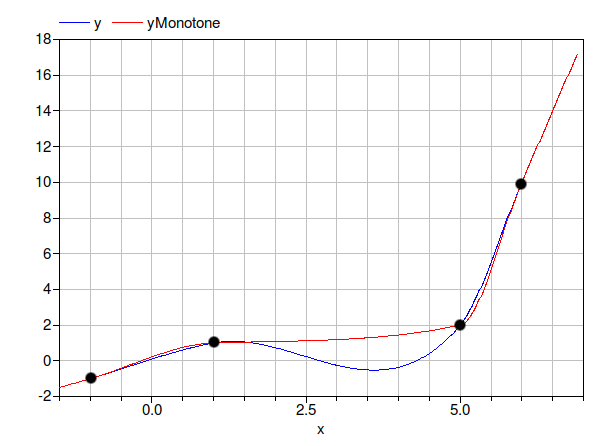

This package contains examples for the use of models that can be found in Buildings.Utilities.Math.Functions.
Extends from Modelica.Icons.ExamplesPackage (Icon for packages containing runnable examples).| Name | Description |
|---|---|
| Test problem for function that replaces 1/x around the origin by a twice continuously differentiable function | |
| Test problem for function that linearizes y=x^n below some threshold | |
| Test problem for cubic hermite splines |
 Buildings.Utilities.Math.Functions.Examples.InverseXRegularized
Buildings.Utilities.Math.Functions.Examples.InverseXRegularized
| Type | Name | Default | Description |
|---|---|---|---|
| Real | delta | 0.5 | Small value for approximation |
model InverseXRegularized "Test problem for function that replaces 1/x around the origin by a twice continuously differentiable function" extends Modelica.Icons.Example; Real x "Indepedent variable"; parameter Real delta = 0.5 "Small value for approximation"; Real y "Function value"; Real xInv "Function value"; equation x=2*time-1; xInv = if ( abs(x) > 0.1) then 1 / x else 0; y = Buildings.Utilities.Math.Functions.inverseXRegularized(x=x, delta=delta);end InverseXRegularized;
Buildings.Utilities.Math.Functions.Examples.PolynomialDerivativeCheckThis example checks whether the function derivative is implemented correctly. If the derivative implementation is incorrect, the model will stop with an assert statement.
Extends from Modelica.Icons.Example (Icon for runnable examples).
model PolynomialDerivativeCheck
extends Modelica.Icons.Example;
Real x;
Real y;
initial equation
y=x;
equation
x=Buildings.Utilities.Math.Functions.polynomial(x=time-2, a={2, 4, -4, 5});
der(y)=der(x);
// Trigger an error if the derivative implementation is incorrect.
assert(abs(x-y) < 1E-2, "Model has an error.");
end PolynomialDerivativeCheck;
Buildings.Utilities.Math.Functions.Examples.PowerLinearizedmodel PowerLinearized "Test problem for function that linearizes y=x^n below some threshold" extends Modelica.Icons.Example; Real T4(start=300^4) "Temperature raised to 4-th power"; Real T "Temperature"; Real TExact "Temperature"; equation T = (1+500*time); T = Buildings.Utilities.Math.Functions.powerLinearized(x=T4, x0=243.15^4, n=0.25); TExact = abs(T4)^(1/4);end PowerLinearized;
Buildings.Utilities.Math.Functions.Examples.RegNonZeroPower
model RegNonZeroPower
extends Modelica.Icons.Example;
Real y "Function value";
equation
y=Buildings.Utilities.Math.Functions.regNonZeroPower(
time, 0.3, 0.5);
end RegNonZeroPower;
Buildings.Utilities.Math.Functions.Examples.RegNonZeroPowerDerivative_2_CheckThis example checks whether the function derivative is implemented correctly. If the derivative implementation is not correct, the model will stop with an assert statement.
Extends from Modelica.Icons.Example (Icon for runnable examples).
| Type | Name | Default | Description |
|---|---|---|---|
| Real | n | 0.33 | Exponent |
| Real | delta | 0.1 | Abscissa value where transition occurs |
model RegNonZeroPowerDerivative_2_Check
extends Modelica.Icons.Example;
parameter Real n=0.33 "Exponent";
parameter Real delta = 0.1 "Abscissa value where transition occurs";
Real x;
Real y;
initial equation
y=x;
equation
x=Buildings.Utilities.Math.Functions.BaseClasses.der_regNonZeroPower(
time,n, delta, time);
der(y)=der(x);
assert(abs(x-y) < 1E-2, "Model has an error");
end RegNonZeroPowerDerivative_2_Check;
Buildings.Utilities.Math.Functions.Examples.RegNonZeroPowerDerivativeCheckThis example checks whether the function derivative is implemented correctly. If the derivative implementation is not correct, the model will stop with an assert statement.
Extends from Modelica.Icons.Example (Icon for runnable examples).
| Type | Name | Default | Description |
|---|---|---|---|
| Real | n | 0.33 | Exponent |
| Real | delta | 0.1 | Abscissa value where transition occurs |
model RegNonZeroPowerDerivativeCheck
extends Modelica.Icons.Example;
parameter Real n=0.33 "Exponent";
parameter Real delta = 0.1 "Abscissa value where transition occurs";
Real x;
Real y;
initial equation
y=x;
equation
x=Buildings.Utilities.Math.Functions.regNonZeroPower(
time,n, delta);
der(y)=der(x);
assert(abs(x-y) < 1E-2, "Model has an error");
end RegNonZeroPowerDerivativeCheck;
Buildings.Utilities.Math.Functions.Examples.SmoothExponentialDerivativeCheckThis example checks whether the function derivative is implemented correctly. If the derivative implementation is not correct, the model will stop with an assert statement.
Extends from Modelica.Icons.Example (Icon for runnable examples).
model SmoothExponentialDerivativeCheck
extends Modelica.Icons.Example;
Real x;
Real y;
Real ex "exact function value";
initial equation
y=x;
equation
x=Buildings.Utilities.Math.Functions.smoothExponential(
x=time-2, delta=0.5);
der(y)=der(x);
assert(abs(x-y) < 1E-2, "Model has an error");
ex=exp(-abs(time-2));
end SmoothExponentialDerivativeCheck;
Buildings.Utilities.Math.Functions.Examples.SpliceFunction
model SpliceFunction
extends Modelica.Icons.Example;
Real y "Function value";
equation
y=Buildings.Utilities.Math.Functions.spliceFunction(
pos=10, neg=-10, x=time-0.4, deltax=0.2);
end SpliceFunction;
Buildings.Utilities.Math.Functions.Examples.SpliceFunctionDerivativeCheckThis example checks whether the function derivative is implemented correctly. If the derivative implementation is not correct, the model will stop with an assert statement.
Extends from Modelica.Icons.Example (Icon for runnable examples).
model SpliceFunctionDerivativeCheck
extends Modelica.Icons.Example;
Real x;
Real y;
initial equation
y=x;
equation
x=Buildings.Utilities.Math.Functions.spliceFunction(
10, -10, time+0.1, 0.2);
der(y)=der(x);
assert(abs(x-y) < 1E-2, "Model has an error");
end SpliceFunctionDerivativeCheck;
Buildings.Utilities.Math.Functions.Examples.CubicHermiteThis example demonstrates the use of the function for cubic hermite interpolation and linear extrapolation. The example use interpolation with two different settings: One settings produces a monotone cubic hermite, whereas the other setting does not enforce monotonicity. The resulting plot should look as shown below, where for better visibility, the support points have been marked with black dots. Notice that the red curve is monotone increasing.

Extends from Modelica.Icons.Example (Icon for runnable examples).
| Type | Name | Default | Description |
|---|---|---|---|
| Real | xd[:] | {-1,1,5,6} | Support points |
| Real | yd[size(xd, 1)] | {-1,1,2,10} | Support points |
| Real | d[size(xd, 1)] | Derivatives at the support points | |
| Real | dMonotone[size(xd, 1)] | Derivatives at the support points | |
| Boolean | ensureMonotonicity | true |
model CubicHermite "Test problem for cubic hermite splines"
extends Modelica.Icons.Example;
parameter Real[:] xd={-1,1,5,6} "Support points";
parameter Real[size(xd, 1)] yd={-1,1,2,10} "Support points";
parameter Real[size(xd, 1)] d(each fixed=false)
"Derivatives at the support points";
parameter Real[size(xd, 1)] dMonotone(each fixed=false)
"Derivatives at the support points";
parameter Boolean ensureMonotonicity=true;
Real x "Independent variable";
Real y "Dependent variable without monotone interpolation";
Real yMonotone "Dependent variable with monotone interpolation";
Integer i "Integer to select data interval";
initial algorithm
// Get the derivative values at the support points
d := Buildings.Utilities.Math.Functions.splineDerivatives(
x=xd,
y=yd,
ensureMonotonicity=false);
dMonotone := Buildings.Utilities.Math.Functions.splineDerivatives(x=xd, y=yd,
ensureMonotonicity=true);
algorithm
x := xd[1] + time*1.2*(xd[size(xd, 1)] - xd[1]) - 0.5;
// i is a counter that is used to pick the derivative of d or dMonotonic
// that correspond to the interval that contains x
i := 1;
for j in 1:size(xd, 1) - 1 loop
if x > xd[j] then
i := j;
end if;
end for;
// Extrapolate or interpolate the data
y := Buildings.Utilities.Math.Functions.cubicHermiteLinearExtrapolation(
x=x,
x1=xd[i],
x2=xd[i + 1],
y1=yd[i],
y2=yd[i + 1],
y1d=d[i],
y2d=d[i + 1]);
yMonotone :=
Buildings.Utilities.Math.Functions.cubicHermiteLinearExtrapolation(
x=x,
x1=xd[i],
x2=xd[i + 1],
y1=yd[i],
y2=yd[i + 1],
y1d=dMonotone[i],
y2d=dMonotone[i + 1]);
end CubicHermite;